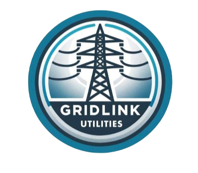

Operational Technology Gap Assessment
December 1st, 2024
Olivia Chen
Executive Summary
As a medium-sized utility responsible for power transmission and distribution, GridLink Utilities faces growing cybersecurity risks that could disrupt operations, lead to financial penalties, and impact regulatory compliance. This assessment identifies critical security gaps and provides a strategic remediation roadmap to safeguard GridLink’s OT environment.
This assessment was conducted with the following objectives:
- Assess GridLink’s OT Environment and Evaluate Its Current Condition
- Identify Security Gaps
- Map the OT Network to the Purdue Model
- Develop Targeted Solutions for Security Gaps
- Prioritize Gaps and Design a Comprehensive Action Plan
Addressing these objectives ensures that GridLink not only mitigates technical vulnerabilities but also strengthens its ability to comply with evolving regulatory standards and industry best practices.
Real-World Example: Why Immediate Action Is Necessary
Recent cyber incidents highlight the real-world consequences of OT vulnerabilities, reinforcing the need for proactive defense measures:
- 2021 Colonial Pipeline Attack – A ransomware attack shut down fuel supplies across the U.S. East Coast, causing widespread economic and operational disruption.
- 2023 DNV Maritime Cyber Attack – Attackers compromised ship control systems, forcing major shipping disruptions.
Failure to act on the identified risks could lead to:
- Grid Downtime, affecting thousands of customers.
- Non-compliance with CCSPA, which may result in financial penalties and increased regulatory oversight once enacted.
- Reputational and Financial Damage due to extended recovery times and loss of customer trust.
By implementing targeted security measures and addressing these risks proactively, GridLink can enhance its resilience against cyber threats, prevent operational disruptions, and align with regulatory expectations.
The assessment identified three critical and three high-priority risks:
| Critical Risk | High Risk | Medium Risk | Low Risk |
|---|---|---|---|
| 3 | 3 |
Current State Analysis
System Overview
GridLink Utilities is a medium-sized power utility responsible for the transmission and distribution of electricity across urban and rural areas. The organization operates 10 transformer stations and 50 distribution stations, which are crucial for managing voltage adjustments to ensure efficient power delivery. To maintain operational continuity and system resilience, GridLink has established a primary control center and a backup control center, located 30 minutes apart.
The company’s technological infrastructure is structured into two distinct networks:
- Operational Technology (OT) Network: Dedicated to managing the physical processes involved in electricity delivery, including power generation, transmission, and distribution, ensuring reliable and uninterrupted service.
- Information Technology (IT) Network: Designed to support business operations such as customer billing, regulatory compliance, and employee management, facilitating seamless administrative and operational workflows.
While these networks operate independently to enhance both security and reliability, they are interconnected to enable centralized monitoring and management of operations. This interconnection links the control centers to transformer and distribution stations, with safeguards in place to maintain critical infrastructure protection.
GridLink operates a total of 325 servers, distributed across its control centers, comprising:
- 250 Windows servers
- 75 Linux servers
These servers are critical for hosting the following key applications:
- Distribution Management System (DMS): Improves grid reliability and safety by optimizing power distribution.
- Energy Management System (EMS): Ensures efficient transmission system performance through real-time monitoring and control.
- Outage Management System (OMS): Provides automated customer notifications during outages, enhancing customer service and communication.
Existing Security Measures
GridLink has implemented next-generation firewalls with intrusion detection capabilities to segregate its OT and IT networks effectively. Firewalls are deployed at all stations, with an ongoing plan to replace legacy models currently halfway complete. Antivirus software is installed on OT workstations in control centers and stations, as well as on Windows and Linux servers located in the control centers.
Internet access within the OT network is strictly restricted. Proxy servers manage and control connections to approved websites for vendor updates, while transformer and distribution stations are prohibited from accessing the internet. Access control lists (ACLs) are configured on routers at stations to regulate local network traffic and ensure that only approved communication occurs between station devices.
An agent-based automated vulnerability scanning platform has been deployed to scan workstations and the Linux and Windows servers in the control centers on a weekly basis. Additionally, network-based scanners are strategically placed within the OT network to perform monthly scans of routers, switches, and other network devices. Servers and workstations receive monthly security patches, and critical systems like the DMS and EMS are updated quarterly.
Mapping of GridLink’s Network to the Purdue Model

Gap Analysis
C-01: Remote Access - Single Factor Authentication and Bypasses the Jump Server
| C-01 | |
| Description | GridLink’s updated remote access setup allows employees to connect from home via VPN, expanding the security boundary to include Level 5 (Public Zone). However, these VPN connections bypass the jump server and rely on single-factor authentication (SFA), significantly increasing the risk of unauthorized access to critical OT systems in the control center (Level 3). Previously, remote access was limited to internal systems (Level 4), which were better protected by internal hardening and segmentation. With the addition of Level 5 access and no multi-factor authentication (MFA), attackers can more easily exploit weak authentication to directly access Level 3 systems. If network segmentation or firewall rules are insufficient, attackers could also move laterally to Level 2 systems, such as Engineering Workstations. This misconfiguration exposes both centralized and distributed OT systems to elevated security risks, potentially disrupting critical operations. |
| Impact | Very High – Unauthorized access may compromise critical Level 3 systems and escalate to Level 2, causing operational disruptions. |
| Probability | High – Due to the use of single-factor authentication and direct VPN access to bypass jump server. |
| Recommendations | Enforce multi-factor authentication (MFA) for all VPN connections and reconfigure VPN access to ensure all remote connections route through the jump server adding an essential layer of security. |
| NIST 800-82r3 Recommendations | Section 6.2.1.4.4 Multi-Factor Authentication |
C-02: OMS and DMS Lack of Segmentation
C-02: OMS and DMS Lack of Segmentation
| C-02 | |
| Description | The Operational Management System (OMS) and Distribution Management System (DMS) are not segmented from other OT applications, enabling potential lateral movement within the OT network if one system is compromised. |
| Impact | Very High – A single compromise could spread across the OT network, leading to critical operational disruptions. |
| Probability | Medium – Segmentation is partially implemented, with EMS in a secure firewalled zone and development environments separated from production. However, the lack of segmentation for OMS and DMS leaves them exposed to risks. |
| Recommendations | To address the segmentation gap, GridLink should isolate OMS and DMS from other OT applications in the production environment to prevent lateral movement. The development environment must also remain fully separated from production to avoid test system vulnerabilities affecting live operations. These measures will reduce risks and enhance the security of the OT network. |
| NIST 800-82r3 Recommendations | Section 6.2.1.3 Network Segmentation and Isolation |
C-03: Unsupported Legacy Operating Systems
C-03: Unsupported Legacy Operating Systems
| C-03 | |
| Description | The Distribution Management System (DMS) operates on Windows Server 2012, which is no longer supported and does not receive security updates. This exposes the system to known vulnerabilities, making it highly susceptible to exploitation. While GridLink has deployed next-generation firewalls and antivirus software, these measures cannot fully mitigate the risks posed by unsupported systems. The lack of segmentation, as noted in C-02, further aggravates the issue by increasing the risk of lateral movement within the OT network. This combination of outdated systems and inadequate segmentation presents a critical risk to GridLink’s OT operations. |
| Impact | Very High – Exploitation of vulnerabilities in the unsupported DMS could lead to disruptions in critical grid operations and lateral movement within the OT network. |
| Probability | Medium – Although existing firewalls and antivirus software reduce some risk, the system remains exposed to known vulnerabilities due to the lack of security patches and vendor support. |
| Recommendations | Expedite the planned upgrade of the Distribution Management System (DMS) to a supported operating system to address vulnerabilities stemming from outdated software. In the meantime, leverage existing network security measures, including next-generation firewalls and intrusion detection systems (IDS), to monitor and restrict unauthorized traffic. Additionally, implement intrusion prevention systems (IPS) or equivalent security controls to actively block exploitation attempts targeting known vulnerabilities in the unsupported DMS system. This layered defense strategy minimizes the system’s exposure to threats while preparations for the upgrade are underway. |
| NIST 800-82r3 Recommendations | Section 5.2.4 Hardware Security & 5.2.3. Layer 3 – Network Security |
H-01: Unhardened Windows 10 Computers and Lack of Device-Level Segmentation
| H-01 | |
| Description |
Transformer and distribution stations rely on Windows 10 computers for local control, but these systems are not configured according to the Center for Internet Security (CIS) Benchmarks. This lack of system hardening makes them vulnerable to exploitation, potentially allowing attackers to compromise these devices. Additionally, the absence of robust device-level segmentation within field stations exposes all connected devices, such as RTUs, IEDs, and engineering workstations, to lateral movement if one system is compromised. While station-level firewalls and ACLs offer some protection by regulating traffic entering and exiting the station, they do not fully isolate communication between devices within the station. The lack of device-specific segmentation increases the vulnerability of field stations to remote access risks, particularly if controls like jump servers are bypassed. |
| Impact | High – Unhardened systems expose critical field stations to vulnerabilities, potentially resulting in localized disruptions or serving as entry points for lateral movement into the OT network. |
| Probability | High – Likely due to the absence of CIS hardening measures, combined with potential exposure through remote access pathways. |
| Recommendations | To address security vulnerabilities, Windows 10 systems in field stations should be configured according to the Center for Internet Security (CIS) Benchmarks to enhance their defenses and mitigate potential threats. Additionally, device-level segmentation should be implemented within field stations to isolate critical assets, including RTUs, IEDs, and operator workstations. This segmentation will reduce the risk of lateral movement and limit the impact of a potential compromise, ensuring greater protection for localized operations. |
| NIST 800-82r3 Recommendations | Section 5.2.4 Hardware Security & 5.2.3. Layer 3 – Network Security |
H-02: Patch Management Gaps
| H-02 | |
| Description | GridLink’s current patch management process is inconsistent across its Operational Technology (OT) environment. Control center servers and workstations receive monthly patches, while critical systems like DMS and EMS are patched quarterly. Patching processes for field stations, especially Windows 10 systems, are unclear or absent, leaving them vulnerable. The DMS runs on unsupported Windows Server 2012 and cannot be patched, creating a persistent security gap. The lack of timely and consistent patching increases the risk of exploitation, particularly for legacy and field station systems. |
| Impact | High – Unpatched systems elevate the risk of exploitation by attackers, which could result in disruptions to centralized operations (Level 3) and field station systems (Level 2). |
| Probability | Medium – Although automated patching is implemented for control center systems, the absence of well-defined patching procedures for field station devices and the use of unsupported legacy systems heightens the chances of vulnerabilities being exploited. |
| Recommendations | To address patch management gaps, GridLink should implement a consistent patching schedule for all OT systems, including field station devices, to match the regular patching frequency of control center systems. Prioritizing the upgrade of legacy systems, such as the DMS, to supported operating systems is crucial to eliminate vulnerabilities associated with outdated software. For systems that cannot be patched immediately, compensating controls should be deployed. This includes virtual patching, which utilizes network-based security measures like intrusion prevention systems (IPS) to monitor and block exploitation attempts without requiring updates to unsupported systems. Additionally, device-level segmentation should be introduced to isolate critical systems and limit the spread of potential compromises. Finally, patching processes for critical applications, such as the EMS and DMS, should be validated to ensure timely remediation of vulnerabilities once discovered. |
| NIST 800-82r3 Recommendations | Section 5.2.4 – Hardware Security & 5.2.5.2. Patching |
H-03: Lack of Logs from OT Equipment in Stations
| H-03 | |
| Description | GridLink’s incident response and security monitoring processes are hindered by the absence of logging from OT equipment in field stations. Currently, only logs from network equipment, servers, and workstations in the control center are collected and forwarded to the Security Information and Event Management (SIEM) system for analysis. Critical OT devices in field stations, such as RTUs, IEDs, and engineering workstations, are not part of this logging system. This blind spot significantly impairs GridLink’s ability to detect, analyze, and respond to potential security incidents involving field station assets. Although there are plans to address this issue in the coming years, the current gap exposes OT operations to undetected threats. |
| Impact | High – Insufficient visibility into field station logs hinders the early identification of potential compromises, which may result in undetected breaches, delayed response times, and substantial disruptions to local operations. |
| Probability | High – Due to the essential role of OT systems in field stations and the absence of centralized logging, there is a strong likelihood that vulnerabilities in these systems could be exploited before they are detected. |
| Recommendations |
To address logging gaps in GridLink’s OT field stations, comprehensive mechanisms should be implemented for critical devices like RTUs, IEDs, and engineering workstations. Logs should capture key events, including access control changes, configuration updates, and process activities, with essential details such as device IDs, event types, synchronized timestamps, and outcomes to ensure seamless correlation.
To overcome storage limitations, logs should be regularly transferred to the centralized SIEM platform, enabling unified monitoring and enhanced threat detection. The SIEM must also be updated with OT-specific use cases to address risks like lateral movement and unauthorized access, prioritizing high-risk devices to reduce the visibility gap. Automated logging solutions should undergo rigorous testing before deployment to avoid system disruptions. For devices that cannot support automation, manual logging processes can be temporarily introduced to maintain visibility until permanent solutions are established. |
| NIST 800-82r3 Recommendations | 6.3.2. Security Continuous Monitoring & Section 6.2.6.1 Logging |
The risks outlined in this report have been assessed using the GridLink Risk Rating Matrix.
Probability Levels:
- Low: Unlikely to occur.
- Medium: Could occur occasionally.
- High: Very likely or frequently occurring.
Impact Levels:
- Low: Minimal impact, easily manageable.
- Medium: Some impact, manageable with some effort.
- High: Significant impact, requires substantial resources to manage.
- Critical: Severe impact, challenging to manage and could cause significant disruption.
| Impact | Probability | ||
|---|---|---|---|
| Low | Medium | High | |
| Very High | High | Critical | Critical |
| High | Medium | High | High |
| Medium | Low | Medium | Medium |
| Low | Low | Low | Low |
Prioritization of Findings
| Finding (in priority order) | Risk Rating | Duration | Resources |
|---|---|---|---|
| Remote Access - Bypasses the Jump Server | Critical | Short (< 3 months) | Low (1 resource) |
| OMS and DMS Lack of Segmentation | Critical | High (> 6 months) | High (3+ resources) |
| Unsupported Legacy Operating Systems | Critical | Medium (3–6 months) | Medium (2 resources) |
| Unhardened Windows 10 Computers and Lack of Segmentation | High | Medium (3–6 months) | Medium (2 resources) |
| Patch Management Gaps | High | Medium (3–6 months) | Medium (2 resources) |
| Lack of Logs from OT Equipment in Stations | High | Medium (3–6 months) | Medium (2 resources) |
Implementation Roadmap

Conclusion
Over the course of this engagement, CyberGuardian OT Solutions has conducted an Operational Technology (OT) Gap Assessment for GridLink Utilities. The scope of this assessment included:
- Evaluating the current state of GridLink’s OT environment and existing security controls.
- Identifying and prioritizing security gaps based on their risk levels.
- Mapping GridLink’s OT network to the Purdue Model for improved understanding of its architecture.
- Recommending targeted solutions and a phased implementation roadmap with resource requirements. While GridLink has implemented foundational security measures, this assessment has identified critical security gaps that require immediate action. Addressing these vulnerabilities will strengthen its resilience, reduce operational risks, and align security practices with industry regulations.
Proactively mitigating these risks will not only safeguard critical infrastructure but also ensure long-term operational stability and regulatory compliance.